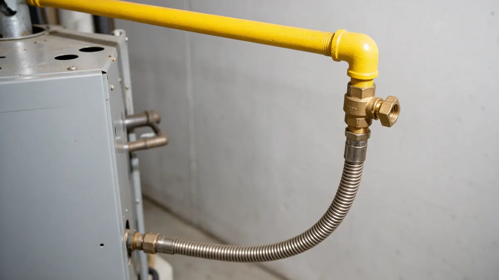

Gas Line Safety Handbook for Colorado Homeowners

Safety comes before any repair when natural gas is involved. This handbook sets out what to do if you smell gas, how to prepare for a new line or appliance hookup, and what to ask before work begins. When the situation is safe, Plumbing Pros Colorado connects you with independent local plumbers who handle gas piping in your area.
If you smell gas, leave first
Natural gas has an added odor often compared to rotten eggs. If you notice it, leave the home right away with everyone inside, including pets. Do not flip switches, use a lighter, start a car in an attached garage or make calls from within the house.
Once you are outside and a safe distance away, call your gas utility or 911. Xcel Energy supplies natural gas in much of the Front Range, and Colorado Springs Utilities serves Colorado Springs. Stay out until the responders say it is safe.
Signs that deserve attention
Besides the smell, watch for a hissing sound near a pipe or appliance, dead or discolored plants over a buried line, bubbles in wet ground, and a pilot flame that burns yellow instead of blue.
- Rotten egg smell
- Hissing near pipes
- Dead patch of grass over the line
- Yellow pilot flame
- Persistent headaches or dizziness indoors
Planning a new line or appliance hookup
Projects like a range, dryer, fireplace, pool heater or outdoor kitchen need gas piping sized for the load. Gas appliances connect through approved fittings and flexible connectors, and joints are tested for leaks after assembly.
Many cities require permits and inspections for gas work. Ask the plumber what applies where you live and who arranges the inspection.
Homes in older parts of Denver, Pueblo and Colorado Springs may combine several generations of piping, so the plumber may want to trace the full run before adding load. Appliances in tight spaces also need adequate combustion air and correct venting.
Call 811 before you dig
A buried line to a grill, garage or fire pit means excavation, and Colorado law expects an 811 call before digging so utilities can mark their lines. Call 811 well ahead of the planned start, then dig only after the marks appear.
Treat the paint and flags as a map, and keep hand tools in use close to marked lines.
Colorado conditions and questions to ask
Altitude thins the air, so burners and appliances need to be set for local elevation, whether in Denver or higher in towns such as Georgetown and Breckenridge. Cold winters keep furnaces and boilers working hard, which tests every fitting.
Ask the plumber what testing is done after the work, whether a permit is involved, and how connectors will be supported. As a referral line we do not do gas work ourselves; the plumber you are connected with does.
What to ask for once the work is done
After a repair or new hookup, ask how the connections were tested and whether the appliance was checked for correct flame and venting. Ask the plumber to show you the shutoff valve for each appliance so you know where it is.
Keep a note of the date, what was changed and any permit or inspection details. If a new appliance was added, ask whether the existing line has enough capacity so that the furnace and water heater keep performing when everything runs at once.
Frequently asked questions
Can I relight a pilot light after smelling gas?
Do not. If you smelled gas, leave and call the utility or 911 from outside, and wait for clearance before touching any appliance. Relighting in a gas-filled space can cause an explosion.
Is a yellow flame on my gas range a problem?
A healthy burner flame is mostly blue. Yellow or orange can indicate poor combustion, dust or a setup issue, which may produce carbon monoxide. Turn the appliance off and ask a qualified professional to check it.
Do I need a permit to move a gas range?
Disconnecting and reconnecting an appliance can be simple, but new piping often needs a permit. Rules vary by city and county, so ask the plumber or your local building department.
Why call 811 for a small digging job?
Utilities can run shallow, and a shovel can nick a gas, electric or communications line. The call is how those lines get marked, and it applies even to a modest hole for a post or a garden bed.
Should I buy a gas detector?
Many households add natural gas detectors, usually mounted high since natural gas rises, along with carbon monoxide alarms. They supplement but never replace leaving the home and calling the utility when you smell gas.
Where is my gas meter shutoff?
The main gas shutoff is at the meter, usually outside. Only the utility or a trained professional should use it, since turning gas back on needs a safe relight of appliances. If you smell gas, leave first and call from outside.
Related plumbing services
Gas Line Services by city
- Water leak repair in Conifer
- Water leak repair in Aurora
- Water leak repair in Loveland
- Water leak repair in Fort Collins
- Water leak repair in Dillon
- Water leak repair in Fountain
Ready to talk to someone? Call (720) 794-0974 or visit gas piping help from a local plumber.